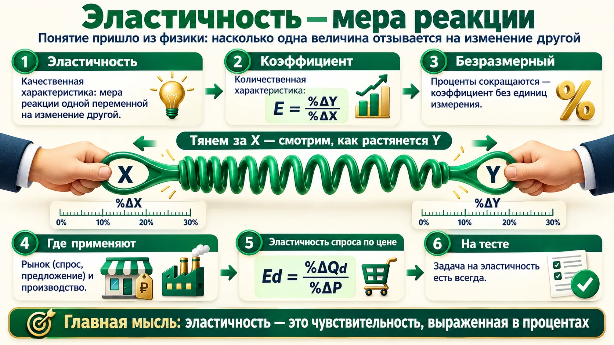
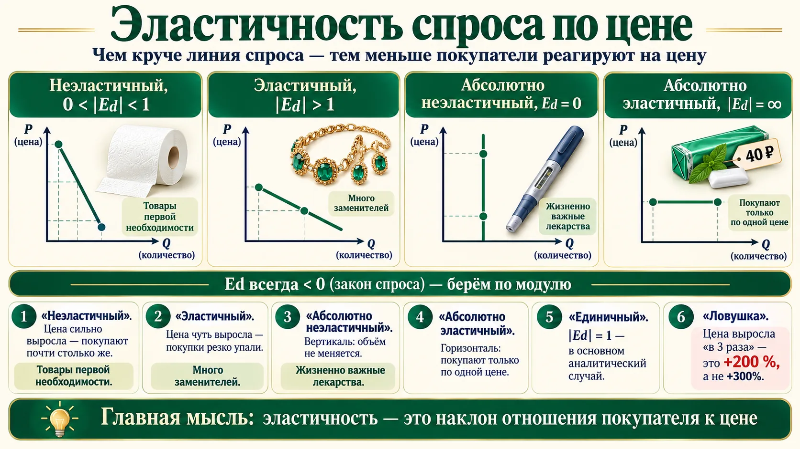
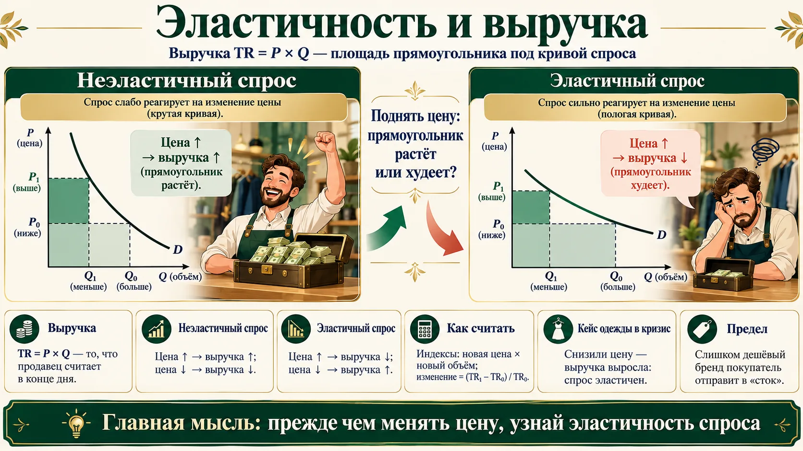
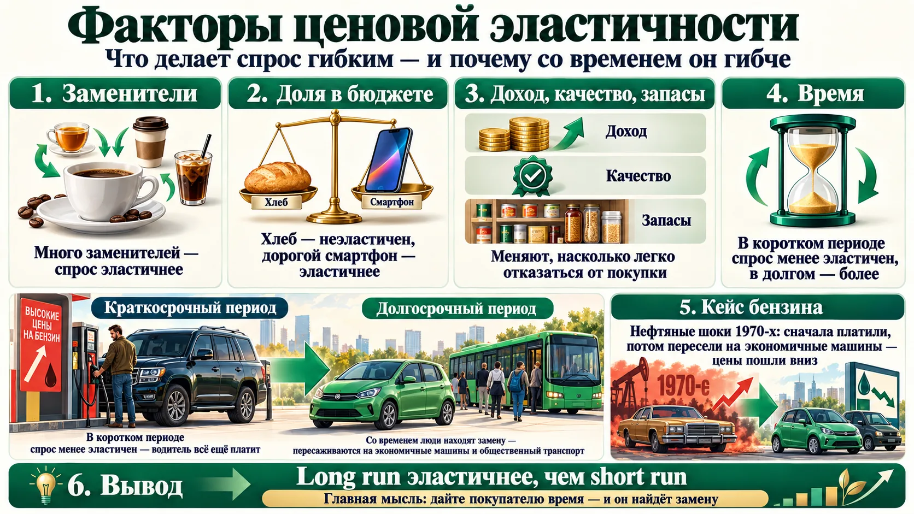
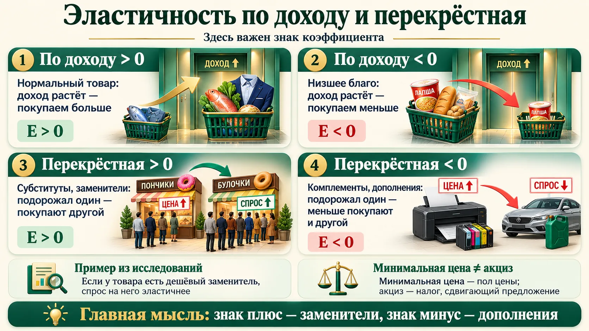
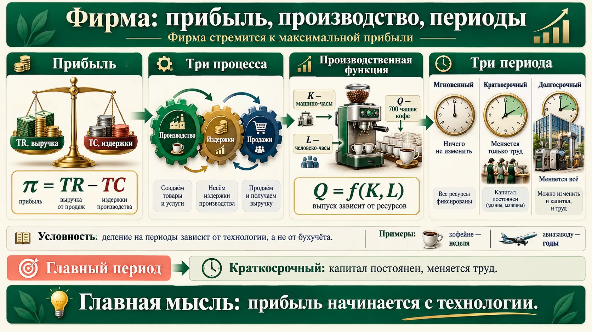
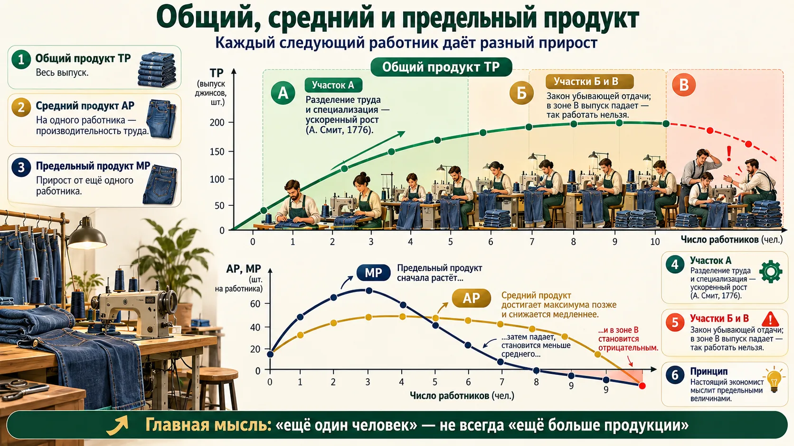
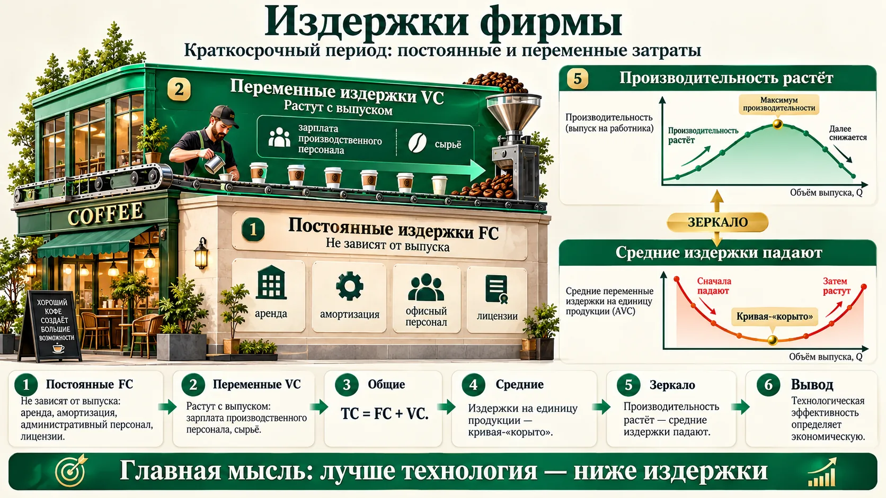
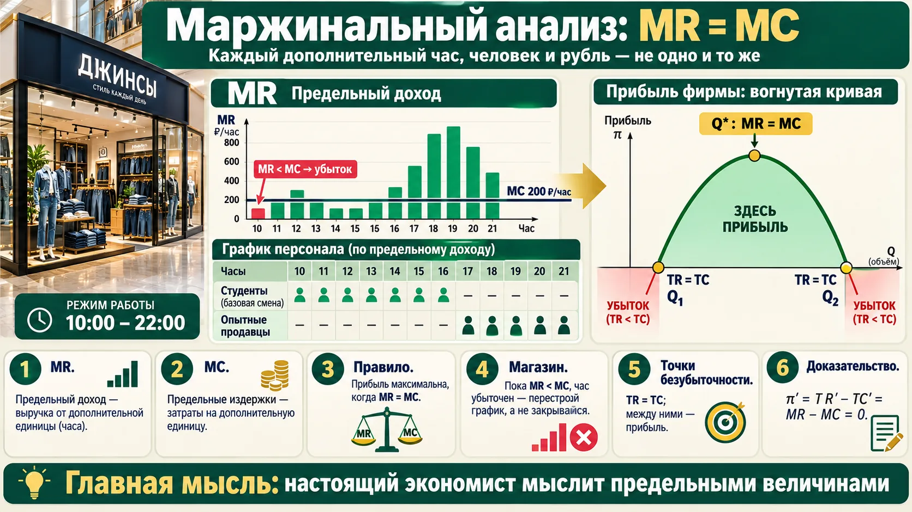
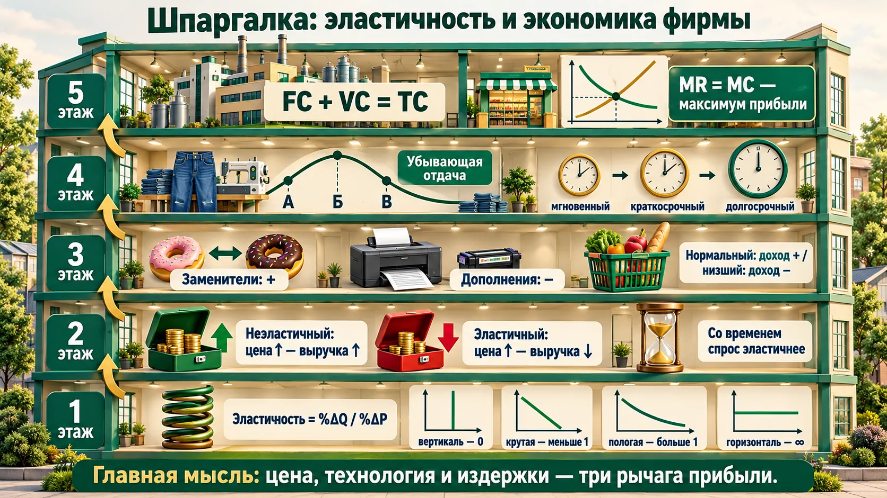

Эластичность: понятие и коэффициент
На прошлом занятии мы узнали, куда двигается спрос при росте цены. Теперь — насколько сильно. Эта задача, по словам преподавателя, есть в федеральном тестировании всегда.

Откуда слово
Термин ввёл в экономику Альфред Маршалл в «Принципах экономической науки» (1890) по аналогии с упругостью материалов: насколько тело растягивается под нагрузкой. В физике упругость измеряют в абсолютных величинах, а экономисты — в процентах, чтобы сравнивать хлеб в рублях за батон и нефть в долларах за баррель.
Эластичность спроса по цене: четыре графика
Чем круче линия спроса, тем меньше покупатели реагируют на цену. Преподаватель нарисовала четыре варианта — их и спрашивают на тесте.

| Спрос | |Ed| | Линия | Пример с лекции |
|---|---|---|---|
| Абсолютно неэластичный | 0 | вертикальная | инсулин, жизненно важные лекарства |
| Неэластичный | 0 < |Ed| < 1 | крутая | товары первой необходимости: туалетная бумага. Цена +200 %, объём −10 % → |Ed| = 0,05 |
| Единичный (унитарный) | 1 | — | в основном аналитический случай |
| Эластичный | |Ed| > 1 | пологая | бижутерия, модные марки: цена +10 %, объём −30 % → |Ed| = 3 |
| Абсолютно эластичный | ∞ | горизонтальная | «жвачка за 40 ₽ и ни копейки больше» (пример американского профессора) |
«В три раза» — это +200 %
- Цена выросла в 3 раза: было 100, стало 300, прирост 200 → +200 %, а не +300 %.
- Знак минус у Ed — не «спрос упал», а характер связи. На тесте ответ часто дают по модулю.
- Неэластичный — строгое неравенство 0 < |Ed| < 1 (поправка слушателя на лекции): 0 и 1 — отдельные случаи.
Эластичность начинается с личного спроса
Занятия ребёнка перед конкурсом в профильную школу подорожали на 10 % — «куда деваться, буду платить»: неэластично, хотя это не первая необходимость. А от новой вещи или поездки откажусь — это эластичная часть бюджета. Пример американского профессора с жвачкой преподаватель считает неудачным.
Эластичность и выручка
Зачем вообще знать эластичность? Чтобы понять, что будет с выручкой, если вы поменяете цену.

| Спрос | Цена ↑ | Цена ↓ |
|---|---|---|
| Неэластичный (|Ed| < 1) | выручка растёт | выручка падает |
| Единичный (|Ed| = 1) | не меняется | не меняется |
| Эластичный (|Ed| > 1) | выручка падает | выручка растёт |
Сначала решите сами
Цена выросла на 10 %, объём продаж сократился на 30 %. Как изменилась выручка (в процентах)?
Ответ и разбор
Считаем индексами: новая цена — 1,1 от старой, новый объём — 0,7 от старого. TR₁ = 1,1 × 0,7 = 0,77 от прежней выручки. Изменение: (0,77 − 1) / 1 × 100 % = −23 %. Спрос эластичен (|Ed| = 3), поэтому рост цены выручку уменьшил.
Частая ошибка — вычесть проценты: «+10 − 30 = −20 %». Так нельзя: изменения перемножаются, а не складываются.
В кризис выручка упала. Компания сократила издержки и снизила цены — выручка выросла: спрос на её одежду эластичен. Но, предупреждает кейс, занижать цену слишком сильно нельзя. Покупатель переведёт бренд «в сток», в низший сегмент, и это ударит по всем будущим продажам. Gloria Jeans — средний и низкий сегмент; вылететь в низкий компания не хотела.
Как руководителю пользоваться эластичностью
- Перед повышением цены проверьте, есть ли у клиента заменитель и какую долю бюджета он на вас тратит. Нет заменителя, доля мала — повышение, скорее всего, увеличит выручку.
- Проверяйте на части рынка: поднимите цену в одном регионе или канале и сравните продажи. Это и есть оценка эластичности на практике.
- Эластичность у разных клиентов разная. Поэтому существуют тарифы, программы лояльности и цены для разных сегментов — ценовая дискриминация из занятия 3.
Факторы ценовой эластичности спроса
Что делает спрос гибким — и почему со временем он становится гибче.

| Фактор | Как влияет |
|---|---|
| Наличие заменителей | много заменителей — легко перейти на другой товар — спрос эластичнее |
| Удельный вес в бюджете | хлеб (малая доля) — менее эластичен, iPhone (большая доля) — более |
| Размер дохода | меняет структуру потребления: есть деньги — переходим на другой товар |
| Качество товара | влияет на готовность отказаться |
| Размер запаса | есть запас — можно переждать подорожание |
| Ожидания, фактор времени | в краткосрочном периоде спрос менее эластичен, в долгосрочном — более |
Спрос на бензин и автомобили
Нефтяные шоки 1970-х: страны ОПЕК подняли цены (СССР и США в договорённости не участвовали). В краткосрочном периоде и спрос, и предложение неэластичны: человек с машиной на 40 литров на 100 км всё равно ездит на работу. Высокие цены держались до 1982 года. Потом спрос адаптировался: пересели с джипов на малолитражки, автопроизводители начали делать экономичные модели — и цены пошли вниз. Long run эластичнее, чем short run.
Цифры к кейсу
По оценкам, собранным в учебнике Р. Пиндайка и Д. Рубинфельда «Микроэкономика», эластичность спроса на бензин по цене около −0,2 в первый год и около −0,8 через 10 лет. Со спросом на сами автомобили обратная картина: в первый год около −1,2 (покупку можно отложить), через 10 лет около −0,4, потому что старые машины всё равно приходится менять.
Источник: R. Pindyck, D. Rubinfeld, «Microeconomics», гл. 2 (табл. «Спрос на бензин и автомобили»).
Эластичность по доходу и перекрёстная
У этих коэффициентов, в отличие от ценовой эластичности, главное — знак.

E > 0 — нормальный товар: доход растёт — покупают больше (свежая рыба, качественная одежда и обувь).
E < 0 — низшее (инфериорное) благо: доход растёт — покупают меньше.
➕ В учебниках добавляют: E > 1 — товары роскоши (доля в расходах растёт с доходом), 0 < E < 1 — товары первой необходимости.
Как цена товара X влияет на объём спроса на товар Y.
E > 0 — субституты (заменители): пончики подорожали в «Пятёрочке» — студенты пошли в «Магнит».
E < 0 — комплементы (дополнения): подорожал картридж — падает спрос на принтер; машина и бензин, сим-карта и телефон.
Знаки не перепутайте
- На лекции преподаватель сначала сказала наоборот, потом исправилась: субституты — плюс, комплементы — минус.
- Проверка за секунду: у субститутов цена одного и спрос на другой движутся в одну сторону.
- Не путайте с занятием 3: там шла речь о сдвиге спроса, здесь — о величине коэффициента. Логика та же.
- По цене самое эластичное — пиво; вино — около единицы; водка эластичнее вина, потому что у неё есть дешёвый заменитель — самогон (у него в таблице прочерк: рыночной цены нет).
- По доходу у водки, пива и вина коэффициент положительный — нормальные товары. У самогона — отрицательный: доходы падают — пьют больше самогона.
- Перекрёстная по цене водки (по данным таблицы): самогон и пиво — субституты, вино — комплемент.
- Поэтому государство изучает эластичность, когда регулирует рынок: слишком дорогая легальная водка толкает людей к самогону.
Минимальная цена на водку
На лекции прозвучало «около 280 ₽ за пол-литра». Актуально: 299 ₽ в 2024 году, 349 ₽ с 1 января 2025 года, 409 ₽ с 1 января 2026 года (приказ Минфина России). Это пол цены: ниже продавать нельзя. Он ограничивает рынок, только если стоит выше равновесной цены (занятие 3). Преподаватель верно отличила его от акциза: акциз — налог, он сдвигает предложение влево.
Источник: приказы Минфина России об установлении минимальных цен на алкогольную продукцию крепостью свыше 28 % (№ 191н от 12.12.2024 и последующий на 2026 год).
Отступление: собственность и Элинор Остром
Преподаватель отвлеклась от эластичности, чтобы показать: модель можно описать и словами — за такую модель дали Нобелевскую премию.
Собственность — институт, «правила игры». Триада владение, пользование, распоряжение — со времён римского права. Рыночные отношения эффективны при частной собственности.
Кейс со слонами: одна страна железно запретила охоту — популяция сократилась, «слоны ничьи». Другая разрешила охоту по лицензиям, которые продают соседние деревни, — деревни стали бороться с браконьерством, популяция сохранилась.
Элинор Остром: «это правда, но не вся». Есть ниша, где эффективнее общая (общинная) собственность, если сообщество само договорилось о правилах. Доказательства — описательные, на материале исследований по всему миру.
💬 Пример преподавателя: цоколь её дома поделили на доли под кладовки с хламом. Общей собственностью его можно было бы сдавать в центре города.
Элинор Остром
Элинор Остром (1933–2012) — американский политолог, первая женщина — лауреат Нобелевской премии по экономике (2009, вместе с Оливером Уильямсоном, «за анализ управления экономикой, в особенности общими ресурсами»). Книга «Управляя общим» вышла в 1990 году. Её примеры: альпийские пастбища деревни Тёрбель в Швейцарии, общинные леса японских деревень, оросительные системы Валенсии, рыболовство в Аланье (Турция). Восемь условий успеха общины: чёткие границы ресурса и круга пользователей, правила под местные условия, участие пользователей в их изменении, наблюдение, постепенные санкции, дешёвое разрешение споров, признание властью, многоуровневая организация.
Кейс со слонами — классический пример прав собственности, а не из книги Остром: в Кении охоту запретили в 1977 году, а программа CAMPFIRE в Зимбабве отдала доходы от лицензий местным общинам.
«Общее» внутри компании
Общая переговорная, общий автопарк, общий бюджет на рекламу — всё это «общие ресурсы». Без владельца и правил их растаскивают, как цокольный этаж. Работают два решения из этого раздела: назначить хозяина (частная собственность) или договориться о правилах и контроле внутри команды (по Остром).
Экономика фирмы: прибыль, производство, периоды
Вторая половина занятия. Тему преподаватель рассказывала по учебнику и видеолекциям И. А. Кима.

Кофейня напротив университета
Работает с 9 до 21, три сотрудника: труд 3 × 12 = 36 человеко-часов, капитал 12 машино-часов, выпуск 700 чашек в день — это мощность. TP (total product) — произведённое, Q — проданное; в простых моделях это одно и то же.
Рыночная власть фирмы — только в пределах кривой спроса на её продукт, даже у монополии: от продукции монополистов уходили, вплоть до покупки генераторов.
| Период | Что можно изменить | Пример |
|---|---|---|
| Мгновенный | ничего | гостиница просит кофе-брейк на 30 человек — кофейне нужна неделя: докупить кофе, договориться о десертах, найти людей |
| Краткосрочный (short run) | только переменный фактор — труд; капитал постоянен | госзаказ на джинсы: сверхурочные, вторая смена, аутсорс; при трёх сменах — потолок |
| Долгосрочный (long run) | все факторы | новое помещение, станки, люди |
Периоды — не календарь
- Деление на периоды условно и зависит от технологии, а не от бухучёта. Кофейне мгновенный период — неделя, авиазаводу на три лишних самолёта — около двух лет.
- В краткосрочном периоде есть постоянный фактор (капитал); в долгосрочном все факторы переменные.
- Краткосрочный период — основной период деятельности фирмы; дальше все модели — для него.
Общий, средний и предельный продукт
Нанимаем швей в цех с постоянным числом машин. Каждый следующий человек приносит разный прирост — и это главная мысль маржинального анализа.

| Величина | Что показывает |
|---|---|
| Общий продукт TP (total) | весь выпуск |
| Средний продукт AP (average) | выпуск на одного работника — производительность труда: AP = TP / L |
| Предельный продукт MP (marginal) | прирост выпуска от ещё одного работника: MP = ΔTP / ΔL |
- А — ускоренный рост: люди делят операции (джинсы — около 40 операций), работает разделение труда и специализация.
- Б — рост медленнее: машины заполняются.
- В — выпуск падает: лишний человек мешает. В коммерческой организации участка В быть не должно; пример — скрытая безработица в СССР.
Закон убывающей предельной производительности
То, что происходит на участках Б и В, в учебниках называется законом: при неизменном количестве одного ресурса каждая следующая единица другого ресурса даёт всё меньший прирост выпуска. На лекции закон не назван, но описан. На тесте его формулируют именно так.
«Настоящий экономист мыслит предельными величинами»
Это один из десяти принципов экономикс Мэнкью. Анализ ведут в трёх типах величин: общих (масштаб), средних (на единицу) и предельных (на дополнительную единицу). Разделение труда описал Адам Смит в «Исследовании о природе и причинах богатства народов» (1776): оно работает на уровне цеха, страны и мирового хозяйства.
Разделение труда в мире: отчёт ОЭСР
Преподаватель привела отчёт ОЭСР (38 развитых стран, Россия не входит). Тенденции — закупать у одного «надёжного» поставщика и возвращать производство к себе. Модель ОЭСР: если страны перейдут к «локальному» режиму, мировой ВВП потеряет больше 5 %, мировая торговля — больше 18 %, а устойчивость к шокам при этом не вырастет. Рекомендации: сохранять торговлю, управлять рисками, развивать цифровые инструменты и международную кооперацию.
Источник: OECD, «Supply Chain Resilience Review» и модель METRO (сценарий «localised regime»).
«Возьмите моего племянника»
Провокация преподавателя: фирма уже на участке В, мощности забиты, а вас просят взять ещё одного человека. Экономически правильный ответ — «нет». Совет: объясняйте отказ ограничениями технологии (нет станка, нет смены), а не отношением к человеку. Перед наймом спрашивайте не «нужен ли нам ещё человек», а «какой прирост выпуска он даст при нынешнем оборудовании».
Издержки фирмы
Издержки — зеркало производительности: чем эффективнее технология, тем дешевле единица продукции.

| Издержки | Что это | Примеры с лекции |
|---|---|---|
| Постоянные (FC) | не зависят от объёма выпуска | аренда, амортизация, административный персонал, лицензии |
| Переменные (VC) | растут с выпуском | зарплата производственного персонала (около 60 % переменных затрат), сырьё |
| Общие (TC) | TC = FC + VC | — |
| Средние (AC, AVC) | издержки на единицу продукции | кривая-«корыто»: сначала падают, потом растут |
| Предельные (MC) | прирост издержек от дополнительной единицы: MC = ΔTC / ΔQ | час работы продавца — 200 ₽ |
Почему «корыто»
Средние переменные издержки зеркальны среднему продукту. Пока работает разделение труда, производительность растёт, и каждая единица обходится дешевле. Когда начинается убывающая отдача, единица дорожает. Технологическая эффективность предопределяет экономическую.
Постоянные издержки в кризис
При падении продаж переменные издержки сокращаются сами вместе с выпуском, а постоянные остаются: аренду платить так же. Поэтому в кризис компании пересматривают именно постоянную часть — субаренда, аутсорсинг административных функций, аренда оборудования вместо покупки. Так поступила и Gloria Jeans в 2009 году: сократив издержки, она смогла снизить цены.
Маржинальный анализ: MR = MC
«Условие-заклинание» любой фирмы. Сначала — задача: вы управляете магазином джинсов, и вам нужно расставить смены.
Магазин джинсов в ТЦ, будний день, 10:00–22:00
Час работы опытного продавца стоит 200 ₽, студента — 130 ₽. Выручка по часам неравномерна. Расставьте смены так, чтобы прибыль за день была максимальной. Картинка с ответом — после тренажёра.

π = TR − TC → max. В точке максимума производная равна нулю: TR′ − TC′ = 0. Производная общей величины — предельная: MR − MC = 0 → MR = MC. На графике прибыль — парабола ветвями вниз; точки безубыточности Q₁ и Q₂ — где TR = TC; вершина — оптимальный выпуск Q*.
Как это делают кофейни и Gloria Jeans
- В магазине при ставке 200 ₽ больше половины часов убыточны по предельным величинам. Закрываться нельзя, скидки снизят выручку ещё больше. Решение — перестроить график: в слабые часы — студенты (120–140 ₽), в пиковые — опытные продавцы и управляющие.
- По словам преподавателя, Gloria Jeans купила такую систему управления персоналом у американцев почти за 3 млн долларов, а кофейни рядом с вузом делают то же бесплатно: утром и вечером — школьники, в обед, на бизнес-ланчи — менеджер и постоянный персонал.
- Гостиница (пример слушательницы): делегацию школьников обслуживают волонтёры, бизнес-мероприятие — профессиональный клининг и аниматоры. Выгоды должны соответствовать издержкам.
MR = MC — это не TR = TC
- TR = TC — точка безубыточности: прибыль равна нулю.
- MR = MC — максимум прибыли. В этой точке TR больше TC: равны только приросты.
- Пока MR > MC, выпуск выгодно наращивать; если MR < MC — сокращать.
Зачем руководителю теория
Слушатель рассказал: школьники-промоутеры приносили +20–30 % дохода при затратах в пару процентов. Преподаватель: «Вы считали дискретно, на единицу, — возможно, не дошли до оптимума». Теория — не то же самое, что практика: практика — конкретный процесс, теория — познание закономерностей. «Если хотя бы одна модель даст вам вывод — всё не зря».
Правило для любого «ещё одного»
- Ещё час работы, ещё смена, ещё рекламная кампания, ещё один менеджер — сравнивайте дополнительную выручку с дополнительными затратами, а не средние показатели за год.
- Постоянные издержки в это решение не входят: аренду вы платите в любом случае.
- Следующее занятие (понедельник) начнётся с задач на формулы производства, издержек и продаж.
Что выучить к аттестации
Отмечайте пункт, когда можете объяснить его своими словами без подсказки. Отметки сохраняются в браузере.
Четвёртое занятие готово к аттестации.
Проверьте себя
Пятнадцать вопросов в формате теста. После ответа — правильный вариант и короткий разбор.
1. Эластичность — это…
2. Цена выросла в 3 раза, объём продаж упал на 10 %. Коэффициент эластичности спроса по цене (по модулю):
3. Коэффициент эластичности спроса по цене всегда…
4. Вертикальная линия спроса соответствует…
5. Спрос на товар неэластичен. Фирма повышает цену. Выручка…
6. Цена выросла на 10 %, объём упал на 30 %. Выручка изменилась на…
7. Что делает спрос на товар более эластичным?
8. Спрос на бензин в долгосрочном периоде по сравнению с краткосрочным…
9. Эластичность спроса по доходу отрицательна. Это…
10. Перекрёстная эластичность двух товаров положительна. Это…
11. Минимальная розничная цена на водку — это…
12. Краткосрочный период в теории фирмы — это период, когда…
13. Средний продукт труда показывает…
14. К постоянным издержкам относится…
15. Фирма максимизирует прибыль, когда…
Отвечено: 0 / 15
Шпаргалка: главное из занятия

- Эластичность = %ΔQ / %ΔP. По цене — всегда минус, берём модуль: меньше 1 — неэластичный, больше 1 — эластичный.
- Выручка: неэластичный спрос — поднимай цену, выручка вырастет; эластичный — снижай. Изменения перемножаются: 1,1 × 0,7 = 0,77.
- Факторы: заменители, доля в бюджете, доход, качество, запасы, время. Со временем спрос эластичнее.
- Знак решает: по доходу плюс — нормальный, минус — низший; перекрёстная плюс — субституты, минус — комплементы.
- Собственность — институт. Ресурс без хозяина и правил растаскивают; по Остром, община с правилами справляется сама.
- Фирма максимизирует π = TR − TC через производство, издержки и продажи; short run — основной период.
- Убывающая отдача: каждый следующий работник при тех же машинах даёт всё меньше; участка В в бизнесе быть не должно.
- MR = MC — максимум прибыли. Мысли предельными величинами: каждый дополнительный час, человек и рубль — не одно и то же.